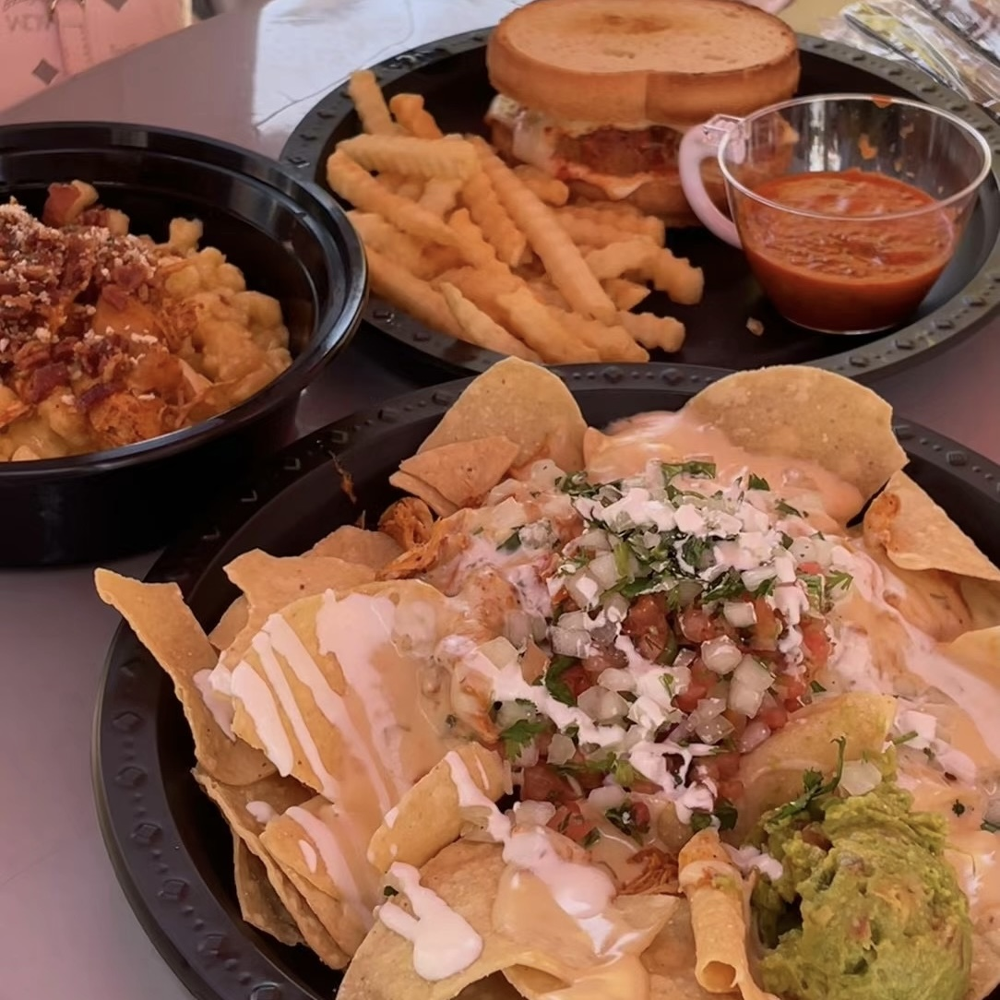
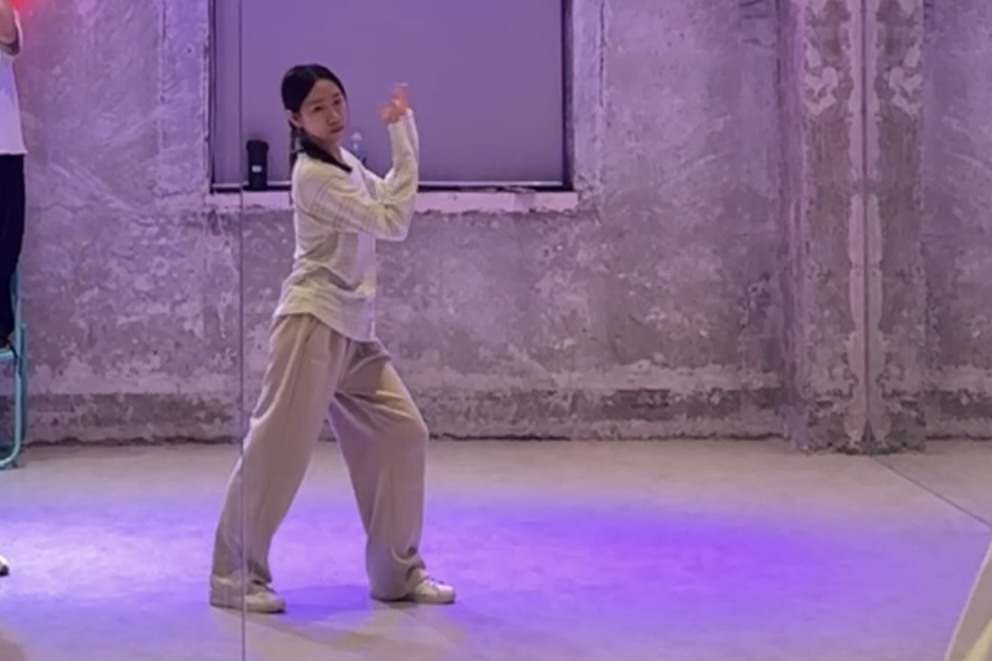
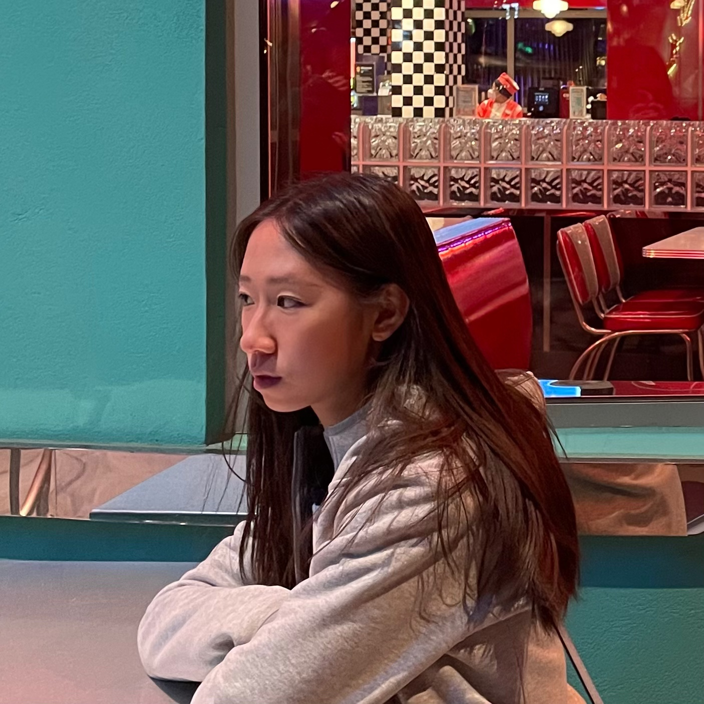
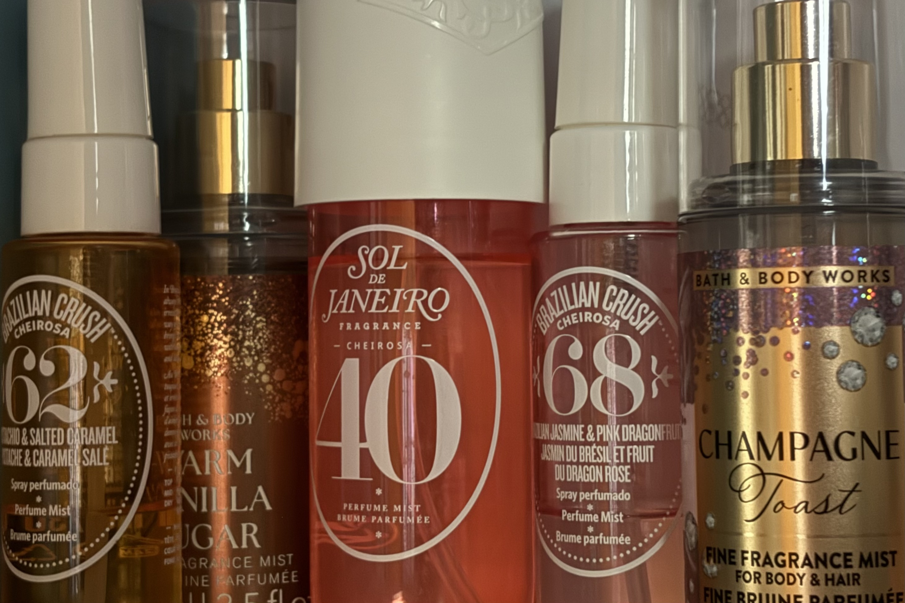
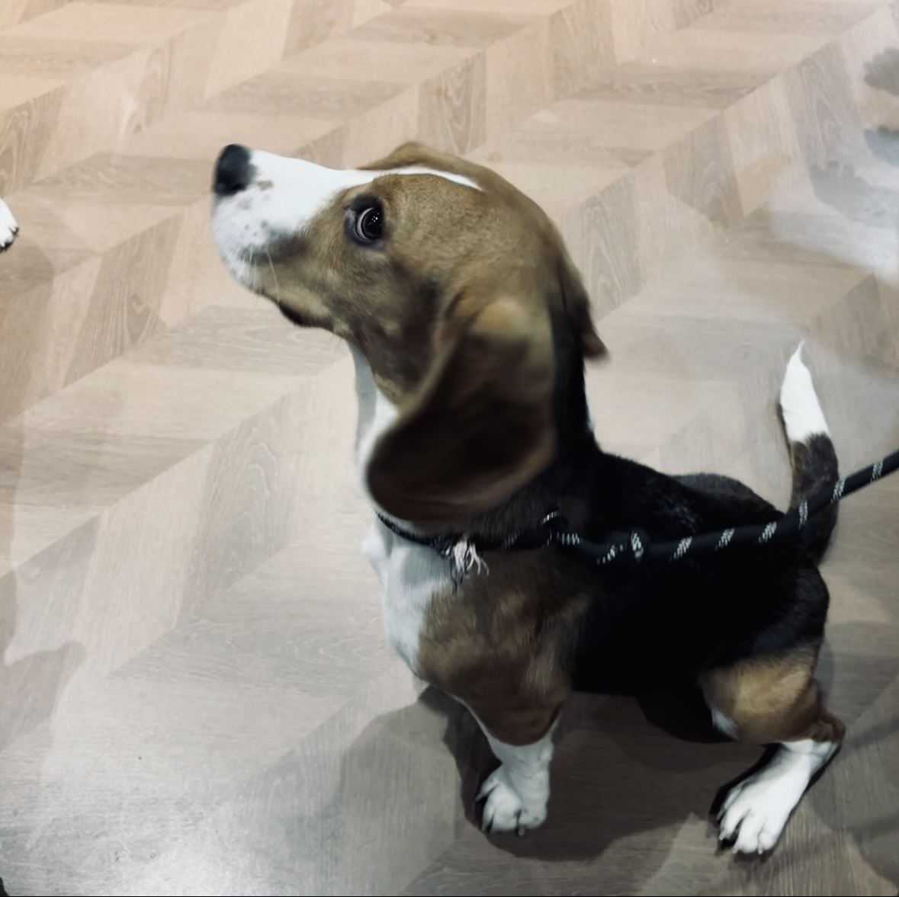
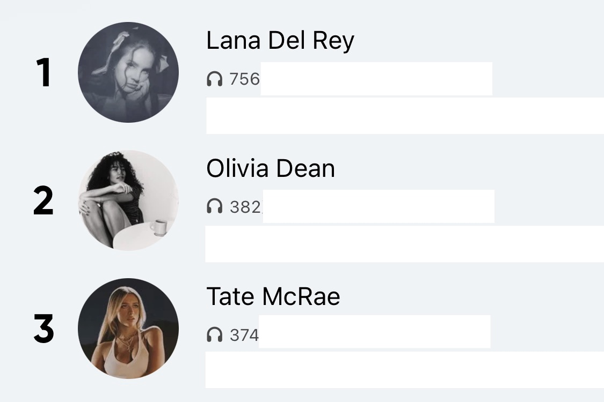

Click avatar
Hi, I am Reese.
hujiahuan202109@163.com
I welcome challenging work and value the learning experience it brings.
Committed to continuous skill development, I am receptive to new things.
I welcome challenging work and value the learning experience it brings.
Committed to continuous skill development, I am receptive to new things.





